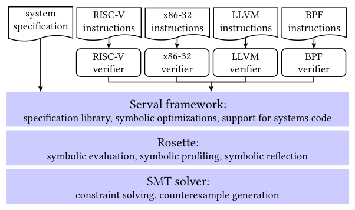
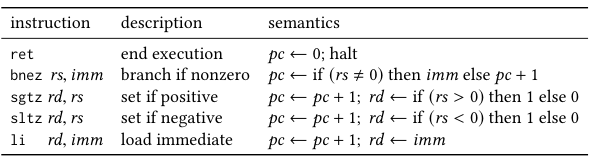
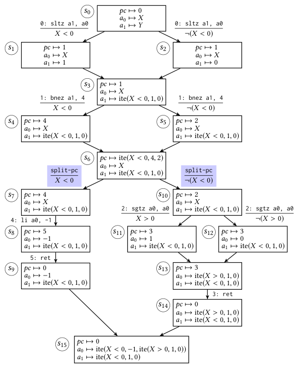
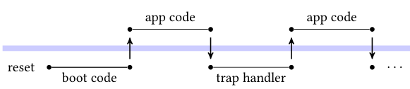
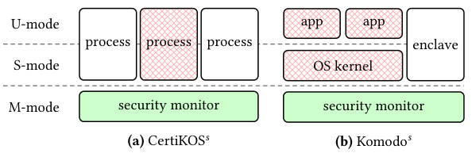
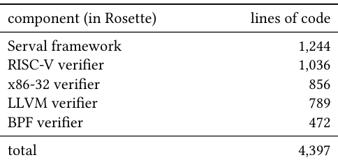
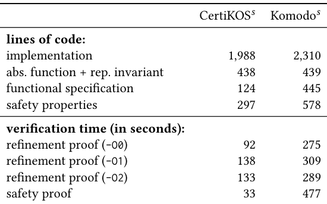
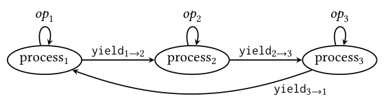
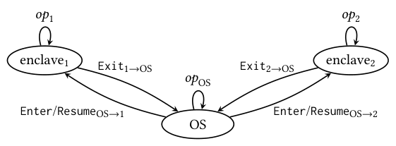

Scaling symbolic evaluation for automated verification of systems code with Serval
This page was written by an AI model to give a high-level overview of the paper. Please check the paper for detail: ACM Digital Library.
Formal verification can eliminate entire classes of bugs in systems software, but the cost is steep. The seL4 microkernel proof took 11 person-years and produced a proof-to-implementation ratio of 20:1; CertiKOS, one of the systems this paper revisits, carries roughly 200,000 lines of Coq specification and proof. Push-button verification projects such as Hyperkernel, Yggdrasil, and Nickel cut this cost by co-designing systems with finite interfaces (no unbounded loops) so that an automated verifier can reduce correctness to a satisfiability query and hand it to an SMT solver, with no developer-written proof annotations. That shifts effort from writing proofs to designing interfaces and specifications, at the cost of generality.
But push-button verifiers have their own problems. Prior ones are written as bespoke, system-specific symbolic evaluators (about 3,000 lines of Python for a prior LLVM verifier), which takes expertise to build and is hard to reuse or retarget to a new instruction set. Symbolic evaluation over systems code is also prone to path explosion, where the verifier wastes time and memory exploring infeasible paths or produces constraints the solver cannot discharge; prior work gives no systematic way to find or fix the cause. And existing verified systems, such as CertiKOS (proved in Coq) and Komodo (proved in Dafny), were not designed for push-button verification at all, so it is unclear what it takes to retrofit them.
Serval's answer is to stop writing verifiers directly and instead write an interpreter for an instruction set in Rosette, a solver-aided extension of Racket. Running that interpreter on a concrete CPU state makes it an ordinary emulator; running it on a symbolic CPU state makes Rosette's symbolic evaluation turn the same code into a verifier, a process the paper calls "lifting." Serval ships four such verifiers, for RISC-V, x86-32, LLVM, and BPF, and because they share Rosette's engine they inherit its optimizations (constraint caching, partial evaluation, state merging) for free and can be composed, for example to check a JIT compiler by running the source and target verifiers side by side.
To make lifted verifiers scale, Serval pairs them with a symbolic profiler that ranks which functions are the likely bottlenecks under symbolic evaluation, and a catalog of reusable symbolic optimizations (such as forcing a symbolic program counter to split into concrete cases) that exploit domain knowledge to repair those bottlenecks. Serval also provides a specification library for state-machine refinement and noninterference, and a memory model and binary-level evaluation strategy so a verifier need not trust the compiler, assembler, or linker.
The authors port CertiKOS and Komodo, originally verified on x86 and ARM respectively, to a single RISC-V platform and re-verify them with Serval in roughly four person-weeks each, reusing their interfaces and designs. Applying Serval to two systems that had no formal specification at all, the Keystone RISC-V enclave monitor and the Linux kernel's BPF just-in-time compilers for RISC-V and x86-32, turns up 18 new bugs, all confirmed and fixed by the respective developers.

Key takeaways
- Serval builds a verifier by lifting an ordinary interpreter, written in Rosette, into symbolic evaluation, rather than hand-writing a symbolic evaluator per system.
- Four reusable, composable verifiers ship with Serval: RISC-V, x86-32, LLVM, and BPF, totaling 4,397 lines of Rosette (framework plus all four), versus roughly 3,000 lines of Python for a single prior push-button verifier.
- Symbolic profiling plus a catalog of symbolic optimizations (split-pc, split-cases, memory-address and system-register concretization) are what make symbolic evaluation of real systems terminate at all; disabling them times out verification of both ported systems after two hours.
- CertiKOS and Komodo, neither designed for automated verification, were ported to a shared RISC-V platform and re-verified with Serval in about four person-weeks each, reusing their original interface designs.
- Applying Serval to Keystone and the Linux kernel's BPF JIT compilers, neither of which had prior formal specifications, found 18 new bugs, all confirmed and fixed by developers.
From an interpreter to a scalable automated verifier
Push-button verification's requirements, how lifting works, how Serval finds and fixes performance bottlenecks, and how it was retrofitted onto two existing security monitors.
1 · The push-button bet: finite interfaces, automatic proofs
Push-button verification asks developers to design a system's interface so that every operation (a system call, a monitor call) can be expressed as a trace of bounded length, with no unbounded loops. Given that constraint, a verifier can perform all-paths symbolic evaluation: it runs the implementation on a symbolic input and explores every feasible path, producing a logical formula whose satisfiability an SMT solver can check automatically, without the loop invariants or preconditions that auto-active provers such as Dafny require. The price is that the methodology only applies to systems whose behavior is genuinely finite, and that specifications are restricted to a decidable fragment of first-order logic (booleans, bitvectors, uninterpreted functions, and quantifiers over finite domains).
2 · Writing an interpreter instead of a verifier
Serval's central move is that developers write an interpreter for an instruction set, in ordinary Rosette code, rather than a symbolic evaluator. The paper walks through this with ToyRISC, a five-instruction toy ISA (ret, bnez, sgtz, sltz, li).

The interpreter defines CPU state as a struct of a program counter and registers, and runs a fetch-decode-execute loop until it hits ret. Given a concrete state, it behaves like a normal emulator. Given a symbolic state, created with Rosette's define-symbolic, the same code runs under symbolic evaluation and is thereby "lifted" into a verifier with no extra code: this is the only mechanism needed to go from interpreter to verifier.
3 · What symbolic evaluation actually does: state merging and path explosion
Rosette's symbolic evaluator uses a hybrid of two classic strategies: symbolic execution, which explores each path separately and maximizes concrete evaluation, and bounded model checking, which merges program states at control-flow joins into compact, polynomial-size encodings.

Running the ToyRISC interpreter on the sign-of-a0 example shows both effects. After the first branch (sltz), Rosette merges the two resulting states into one, using an "ite" (if-then-else) conditional value for the changed register, which keeps the encoding compact. But a later branch (bnez) merges states whose program counters differ, producing a symbolic pc. A symbolic pc is expensive: every later instruction fetch has to consider every possible instruction the symbolic pc could index, and if the loop's termination condition becomes symbolic, evaluation can fail to terminate altogether.
4 · Diagnosing bottlenecks with symbolic profiling
Ordinary profiling metrics (time, memory) do not explain why symbolic code is slow. Serval reuses Rosette's symbolic profiler, which tracks statistics per function, such as the number of symbolic values, path splits, and state merges, and ranks functions by a score computed from them. For the unoptimized ToyRISC verifier, the profiler's top two hits are execute (expected, since it implements the ISA's semantics) and vector-ref inside fetch (a red flag): a symbolic pc has produced a symbolic, merged instruction standing in for every instruction in the program, so the verifier ends up executing every possible instruction at every step. Symbolic profiling is systematic but still requires a developer to read its output and diagnose the root cause; it also cannot see inside the SMT solver, so it misses solver-side bottlenecks such as nonlinear arithmetic.
5 · The catalog of symbolic optimizations
Once a bottleneck is diagnosed, Serval's optimizations repair it by using domain knowledge to simplify the symbolic values flowing through the verifier:
- split-pc. Recursively breaks a symbolic (ite-valued) program counter into its concrete branches, evaluates each separately, and re-merges the results into a coarser ite; this effectively clones the program state per concrete pc and restores partial evaluation. Applied uniformly before every fetch, it was sufficient for every system in the paper. An unconstrained (opaque) pc cannot be split this way and usually signals a security bug.
- Memory-address concretization. A symbolic array index such as a process ID can turn a struct-field offset into a symbolic expression (for example
(C0 × pid + C1) mod C0) that Rosette cannot soundly simplify on its own, because the simplification is unsound in the presence of overflow. Serval pattern-matches this form, optimistically rewrites it to the constant field offset, and emits a side condition checking the rewrite is valid under the current path condition. - System-register concretization. Verifying a trap handler starts from a state where system registers (such as a trap-vector register) hold arbitrary symbolic values, which is expensive to reason about. Serval reuses the representation invariant that developers already write for refinement proofs to rewrite such registers to the concrete values boot code actually sets them to.
- split-cases. Trap dispatch on an opaque cause value (a system-call number) produces one monolithic constraint covering every handler, which the solver cannot decompose. Given the list of concrete dispatch values, split-cases rewrites the cause into a chain of ite comparisons against them, letting each handler be verified with its own, separate constraint.
These optimizations occur during symbolic evaluation itself, complementing the generic constraint simplification that Rosette and the SMT solver already perform. Results of applying this catalog are covered in the Evaluation tab.
6 · Verifying properties: safety, refinement, noninterference
Serval's specification library supplies standard proof obligations on top of a lifted verifier. Absence of undefined behavior is checked via bug-on conditions the verifier inserts (reused from Clang's UndefinedBehaviorSanitizer for the LLVM verifier). State-machine refinement asks for a specification state, an abstraction function from implementation state to specification state, and a representation invariant, then checks that running the implementation and the specification in lock-step preserves both; this is the standard way the paper proves functional correctness. Safety properties, one-safety (over a single specification state) and two-safety (such as noninterference, over a pair of states), are proved directly over the specification as a sanity check and, for noninterference, as the paper's model of information-flow security.
7 · Verifying real systems code: the execution model and memory model

Systems such as OS kernels or security monitors alternate between unprivileged application execution and privileged trap handling, with interrupts disabled during the latter, so each trap handler runs in its entirety. A Serval verifier for such a system starts symbolic evaluation from an architecturally defined entry state (for instance, the program counter at the trap-vector value, with general-purpose registers symbolic) and evaluates until a trap-return instruction, covering boot code the same way from the hardware reset state. Serval's RISC-V verifier avoids trusting the disassembler by instead implementing an encoder and validating that re-encoding each decoded instruction reproduces the original binary bytes. Its memory model represents memory as disjoint blocks that can each be built recursively from structured blocks (structs), uniform blocks (arrays), and cells (bitvector-indexed functions), chosen automatically from debug information in the binary, which keeps generated constraints compact without requiring developers to hand-pick a representation.
8 · Retrofitting CertiKOS and Komodo onto RISC-V

CertiKOS (originally x86, verified in Coq) and Komodo (originally ARM TrustZone, verified in Dafny and Vale) were ported to a shared RISC-V platform, running in machine mode (M-mode) with processes or enclaves in supervisor mode rather than user mode, so they can safely handle their own exceptions. Both use RISC-V's physical memory protection (PMP) regions and the trap-virtual-memory (TVM) bit, which lets M-mode trap S-mode accesses to the page-table-root register. The authors found that both monitors' interfaces were already finite, since lightweight security monitors naturally avoid unbounded loops, which made them viable push-button targets despite not being designed for one. Two deliberate interface changes were made to close covert channels during porting: CertiKOS's spawn was changed to let the calling process choose its child's process ID explicitly (closing a channel where a parent's child count leaked to the child), and ELF loading was moved out of the trusted monitor into an untrusted library. Specific verification numbers for both ports are covered in the Evaluation tab.
9 · Finding bugs without full specifications: Keystone and the BPF JIT compilers
Serval also supports partial specifications that do not aim for full functional correctness but are enough to expose design and implementation bugs quickly. For Keystone, an in-development RISC-V enclave monitor with no formal specification, the authors wrote a specification from their own understanding of its design, proved safety properties over it, and manually diffed it against the implementation. For the Linux kernel's BPF JIT compilers, they wrote a checker that combines the BPF verifier with a target-architecture verifier (RISC-V or x86-32) to prove that executing one BPF instruction on a BPF state matches executing the JIT-compiled machine instructions on an equivalent machine state, instruction by instruction. Results from both case studies are in the Evaluation tab.
Evaluation
Code size, verification cost with and without symbolic optimizations, what the retrofits exposed, and the bugs found in previously unverified systems.
Evaluation covers five artifacts: the Serval framework and its four instruction-set verifiers; CertiKOSs and Komodos, the RISC-V ports of CertiKOS and Komodo; the Keystone enclave monitor; and the Linux kernel's BPF JIT compilers for RISC-V and x86-32. Verification timing was measured on an Intel Core i7-7700K at 4.5 GHz; the ported monitors themselves run on a 64-bit U54 RISC-V core on a HiFive Unleashed board.
| What | Value in the paper |
|---|---|
| Verification-timing hardware | Intel Core i7-7700K CPU @ 4.5 GHz |
| Target hardware for ported monitors | U54 64-bit RISC-V core, HiFive Unleashed board |
| Systems studied | CertiKOSs and Komodos (retrofit case studies); Keystone and Linux BPF JIT compilers (bug-finding case studies) |
| Baselines | Original CertiKOS (Coq, x86) and Komodo (Dafny/Vale, ARM); prior push-button LLVM verifiers (~3,000 lines of Python) |
| Metrics | Lines of code, verification time (seconds) by gcc optimization level, person-weeks of porting effort, number of confirmed bugs |
Serval's verifiers are small and reusable compared to prior push-button verifiers

What it shows. Lines of Rosette code for the Serval framework and each of its four verifiers: framework 1,244; RISC-V verifier 1,036; x86-32 verifier 856; LLVM verifier 789; BPF verifier 472; total 4,397 lines.
What to take from it. All four verifiers together, plus the shared framework, are comparable in size to a single prior push-button LLVM verifier written directly as a symbolic evaluator (about 3,000 lines of Python, with no corresponding optimizations). The paper attributes this to lifting: each verifier is "just" an interpreter, so it can reuse Rosette's built-in optimizations and the shared Serval memory model and specification library instead of re-implementing symbolic evaluation machinery per system.
Porting two previously verified monitors to a shared RISC-V platform
What it shows. CertiKOSs and Komodos both run in RISC-V machine mode, with processes or enclaves in supervisor mode rather than user mode, using PMP and TVM for isolation instead of the original platforms' mechanisms. Porting and verifying each system with Serval took roughly four person-weeks.
What to take from it. Neither CertiKOS nor Komodo was designed for automated verification, yet both had interfaces finite enough for Serval once ported. Four person-weeks each is the paper's own point of comparison against the multi-person-year efforts (for example seL4's 11 person-years) that interactive and auto-active verification of comparable systems have required, though the paper is explicit that this reuses the original systems' designs and does not claim the same scope of properties was reproduced in every respect.
Symbolic optimizations are not an optional speedup; without them verification does not terminate

What it shows. Sizes (implementation, abstraction function plus representation invariant, functional specification, safety properties) and verification times in seconds for CertiKOSs and Komodos. CertiKOSs: 1,988 lines of implementation, refinement proof times of 92s (-O0), 138s (-O1), 133s (-O2), and a 33s safety proof. Komodos: 2,310 lines of implementation, refinement proof times of 275s (-O0), 309s (-O1), 289s (-O2), and a 477s safety proof.
What to take from it. Disabling Serval's symbolic optimizations in the RISC-V verifier makes the refinement proof for either system time out after two hours, at any gcc optimization level, because symbolic evaluation fails to terminate; safety proofs are unaffected since they do not use the RISC-V verifier. The authors also found that verifying a Komodos binary built with -O1 or -O2 initially took five times as long as -O0, until one additional symbolic optimization (found and implemented in under a day) brought -O1/-O2 times close to -O0, without affecting the other systems. The paper reads this as evidence that a general-purpose catalog of optimizations, not one-off per-system tuning, can absorb compiler-optimization-induced verification cost.
Automated noninterference proofs catch a real covert channel in CertiKOS's interface

What it shows. CertiKOS's original noninterference specification decomposes a process's "big-step" behavior into three small-step properties about its own actions, other processes' actions, and being yielded to. Because Serval cannot express the unbounded-length big-step actions of the original specification, the authors instead prove these three small-step properties directly, plus the independently developed noninterference specification from the Nickel framework.
What to take from it. Proving Nickel's more general, intransitive-noninterference specification exposed a covert channel that CertiKOS's own specification permitted: the original spawn let a child process infer how many siblings it has by observing its assigned process ID, since IDs are allocated consecutively from a parent's range. CertiKOSs closes this by letting the calling process pick the child's ID explicitly. The result is scoped to this specific interface design choice; the paper notes it has no general way to say which of several different noninterference specifications catches which bugs.
The same methodology surfaces a gap in Komodo's permissiveness, not just in CertiKOS

What it shows. Komodo's noninterference, also expressed as big-step step consistency between the OS and enclaves, cannot be directly proved in Serval for the same reason as CertiKOS, so the authors instead prove Nickel's specification and construct litmus tests to compare the two informally.
What to take from it. Both specifications preclude the OS from learning the contents of a finalized enclave's memory, but Komodo's own noninterference specification permits a hypothetical monitor call that overwrites enclave memory with zeros, which Komodos's Nickel-based specification precludes (the paper notes such a bug would in any case be caught by the separate functional-correctness specification). The comparison is qualitative, constructed via litmus tests rather than a formal equivalence proof, and the authors state there may also be bugs that Komodo's specification would catch but Komodos's would not.
Applying Serval to systems with no prior specification finds 18 new, confirmed bugs
What it shows. For Keystone, Serval's LLVM verifier found two confirmed undefined-behavior bugs (an oversized shift and a buffer overflow) on the paths of three monitor calls, and a manual comparison against an author-written specification led to two accepted interface changes (disallowing enclaves from creating enclaves, and removing an unnecessary page-table check). For the Linux kernel's BPF JIT compilers, the combined RISC-V/x86-32/BPF checker found 15 bugs (9 for RISC-V, 6 for x86-32), all from incorrect handling of zero extension or bit shifts, none of which were caught by the kernel's existing BPF test suite; patches with new regression tests were accepted upstream. The paper's overall count across these efforts is 18 new bugs, all confirmed and fixed by developers.
What to take from it. These bugs were found with partial specifications, not full functional-correctness proofs, which the paper presents as a lighter-weight, faster way to get value from Serval on systems that were never designed for verification. Separately, reusing existing CPU interpreter test suites (such as riscv-tests) to validate Serval's own RISC-V verifier also turned up two bugs in the QEMU emulator, one in the Sail RISC-V specification, and two in the U54 CPU itself (over-strict PMP checks with superpages, and unguarded performance-counter reads that create a covert channel), all confirmed by developers; the paper worked around the U54 bugs rather than waiting for a hardware fix.
FAQ
Q·What problem is Serval actually solving?▾
It is a framework for building the automated verifiers used in push-button verification. Rather than each new system needing a hand-written symbolic evaluator, a developer writes an ordinary interpreter for the relevant instruction set in Rosette, and Rosette's symbolic evaluation automatically turns that interpreter into a verifier. Serval adds systematic tools (symbolic profiling, a catalog of optimizations) to make the resulting verifiers scale to real systems code.
Q·How is "lifting an interpreter" different from writing a verifier by hand?▾
A hand-written verifier directly generates SMT constraints for a specific system's semantics. An interpreter is a normal, executable program; running it on concrete values makes it a CPU emulator, and running the same unmodified code on symbolic values (via Rosette) makes it explore all possible executions and produce the equivalent constraints. One codebase serves as both an emulator (useful for testing) and a verifier, and it automatically benefits from any general-purpose symbolic evaluation improvements in Rosette.
Q·Is Serval a bug-finding tool like KLEE or S2E?▾
It uses the same underlying technique, symbolic evaluation, but aims at proving the absence of bugs via all-paths exploration over systems with finite interfaces, not at finding example-triggering inputs. The paper does use Serval for bug-finding (Keystone, the BPF JITs) by writing partial specifications instead of full refinement proofs, which is a lighter-weight use of the same machinery.
Q·What does "finite interface" mean, and why does Serval require it?▾
A finite interface is one where every operation's behavior can be described by a trace of bounded length, that is, implementable without unbounded loops. Serval's all-paths symbolic evaluation must terminate to produce a constraint, and unbounded loops make symbolic evaluation diverge; bounding the interface up front is what makes full proof automation possible.
Q·Why does a symbolic program counter cause problems, and what does split-pc do?▾
When control-flow paths with different program counters get merged for compactness, the pc becomes a symbolic "if-then-else" value. Every later instruction fetch then has to consider every instruction the symbolic pc could index, which wastes time on infeasible combinations and can block the verifier's termination check. split-pc recursively re-splits the symbolic pc into its concrete branches, evaluates each on its own, and re-merges the results, restoring fast, concrete instruction fetches.
Q·What is symbolic profiling, and what does it tell you that normal profiling doesn't?▾
Normal profilers report time or memory per function, which doesn't explain why symbolic code explodes. Rosette's symbolic profiler instead tracks symbolic-evaluation-specific statistics, such as the number of symbolic values, path splits, and state merges per function, and ranks functions as likely bottlenecks. It points a developer at the right place to look, but diagnosing the root cause and picking a fix is still manual.
Q·Why couldn't Serval directly reuse CertiKOS's or Komodo's original noninterference specifications?▾
Both originals are formulated over "big-step" actions that can contain an unbounded number of small-step actions (for example, a process yielding through an arbitrary number of other processes before control returns). Serval's specification logic is restricted to decidable, finite constructs, so it cannot express that unboundedness directly. The authors instead prove sets of small-step properties, reused from CertiKOS where available or substituted from the Nickel framework, that imply the same guarantee by induction.
Q·Does verifying a binary image mean Serval has to trust gcc and binutils?▾
No. Serval's RISC-V verifier uses objdump to decode the binary but does not trust it: it also implements an encoder and checks that re-encoding each decoded instruction reproduces the exact original bytes. This validates the decoding without requiring Serval to trust the compiler, assembler, or linker that produced the binary.
Q·Can Serval verify concurrent code or rule out side-channel attacks?▾
No, on both counts, and the paper is explicit about this. Serval evaluates a code block (a trap handler or boot code) in its entirety and assumes a single core with interrupts disabled during that execution, matching the assumption made by the original CertiKOS and Komodo systems. It also cannot prove the absence of information leakage through microarchitectural side channels, though the U54 core used is in-order and so not vulnerable to the speculative-execution attacks known at publication time.
Q·Why port both CertiKOS and Komodo to RISC-V instead of verifying them on their original architectures?▾
A shared platform lets the paper reuse one RISC-V verifier and one set of symbolic optimizations for both case studies, and lets it directly compare two different verification methodologies (Coq-based layered refinement and Dafny/Vale auto-active verification) against Serval under matched conditions, including the same memory-protection hardware (PMP and TVM).
Q·What kinds of bugs did Serval actually find in Keystone and the BPF JIT compilers?▾
In Keystone, two undefined-behavior bugs (an oversized shift and a buffer overflow) on the paths of three monitor calls, plus two interface design issues (letting enclaves spawn enclaves, and an unnecessary page-table check) that were incorporated as fixes. In the Linux kernel's BPF JIT compilers, 15 bugs from incorrect zero-extension or bit-shift handling (9 in the RISC-V JIT, 6 in the x86-32 JIT), none caught by the kernel's existing test suite, fixed via accepted upstream patches.
Q·How does Serval's approach compare to Coq (CertiKOS) and Dafny/Vale (Komodo)?▾
Coq and Dafny offer richer logics that can express properties and unbounded-loop code beyond Serval's reach, but at a real cost: CertiKOS's Coq proof runs to roughly 200,000 lines, and Dafny/Vale proofs can hit verification-performance problems that are hard to debug and repair. Serval trades that expressiveness for a decidable logic and bounded implementations, which buys full proof automation and a systematic (if still partly manual) way to diagnose performance problems via symbolic profiling. Both CertiKOS and Komodo also require verification-specific toolchains (CompCert, Vale) for implementation, whereas Serval's verifiers can check binaries produced by standard gcc and binutils.